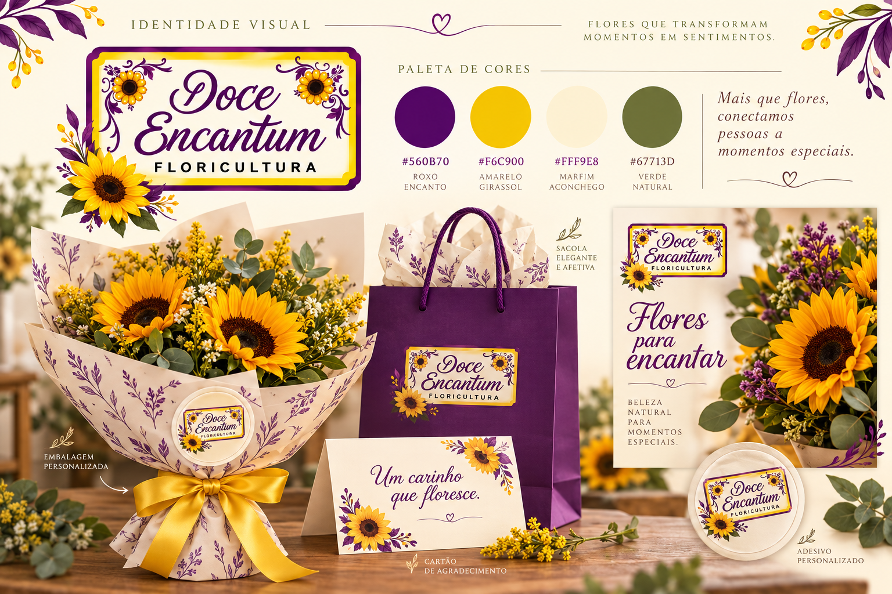

Conceito
Carinho que floresce. O girassol inspira a energia e a alegria; o roxo traz personalidade; o creme dá espaço para as flores e para a mensagem. Folhas e curvas botânicas conectam os materiais ao desenho do logo.
Paleta de cores
Cores de apoio propostas a partir do logo. Use creme como fundo predominante, roxo para títulos e informações e amarelo para pequenos destaques. Reserve o verde para elementos botânicos.
Roxo Encantum
#560B70
RGB 86 · 11 · 112
Amarelo girassol
#F6C900
RGB 246 · 201 · 0
Creme pétala
#FFF9E8
RGB 255 · 249 · 232
Verde folha
#67713D
RGB 103 · 113 · 61
Evite texto amarelo sobre creme. Para informações, prefira roxo sobre creme ou creme sobre roxo. Faça prova de cor antes de imprimir.
Tipografia
Títulos — Georgia
Flores para encantar
Serifada, delicada e acessível. Use em títulos curtos, com bom espaço ao redor.
Informações — Arial
Buquês · Arranjos · Presentes
Use nos textos, preços, contatos e chamadas. Regular para leitura; negrito para destaque.
Assinatura original
A caligrafia do nome permanece no logo. Evite imitá-la em textos longos ou substituir a escrita da marca.
Uso do logo
Preservar
Use o arquivo original, mantendo proporções, cores e todos os elementos. Não estique, recorte, aplique filtros ou acrescente sombras.
Dar espaço
Reserve uma margem livre mínima de 10% da largura do logo em todos os lados. Prefira uma área clara, sem fotografias ou padrões atrás.
Garantir leitura
Como o logo tem muitos detalhes, confira a leitura de “FLORICULTURA” no tamanho final. Como ponto de partida, use pelo menos 240 px de largura no digital ou 45 mm na impressão, ajustando após prova.
Elementos e fotografia
Use folhas, linhas curvas e girassóis como detalhes nas bordas, com o centro livre para a mensagem. Combine fotos de flores reais com luz natural e fundos simples. Faça o produto ocupar a maior parte da composição; use a marca como assinatura.
Aplicações
Embalagens
Papel creme com padrão botânico discreto, fita amarela e etiqueta com o logo original. Sacolas roxas recebem uma área clara para o logo.
Cartões
Frente com o logo e uma frase curta. Verso com espaço para mensagem manuscrita e contatos reais, quando disponíveis.
Redes sociais
Fotos claras, títulos roxos e faixas creme. Trabalhe três temas: produtos, ocasiões e cuidados com as flores. Evite acumular preço, descrição e muitas frases na mesma arte.
Tom de voz
Afetuoso, simples e próximo. Exemplos de texto: “Flores para encantar”, “Um carinho que floresce” e “Transforme um momento em uma lembrança especial”. São sugestões de comunicação, não substituem o nome da marca.
Painel de aplicações

As aplicações são simulações para apresentar a direção visual. Para produção, monte cada peça no tamanho solicitado pela gráfica, usando o logo original; o painel não é uma arte final de impressão.